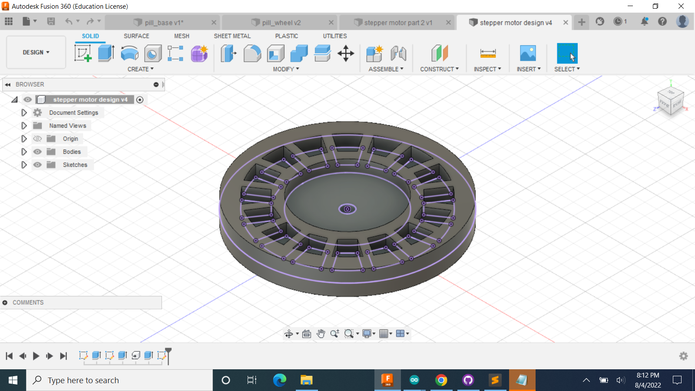
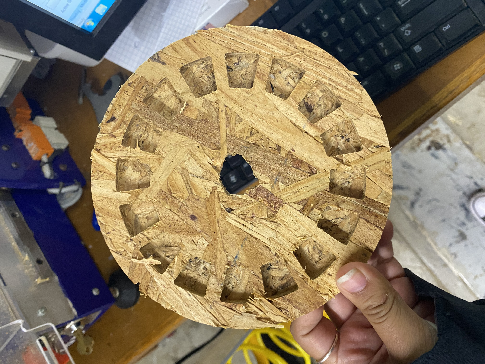

### Week 8
For this week's assignment, we had to make something using the CNC machine and make something out of molding and casting. I decided that was for the CNC machine, I would make a prototype of my pillwheel out of plywood. This is the CAD design of it.

It was VERY challenging learing how to use the CNC machine, also called the ShopBot, because since my design had multiple pockets, I had to have different layers. So I had to move each pocket into a different layer and then continuously delete each line of them so that it's only apart of the other layer and not the original one. When I first used the machine, I didn't add tabs, so it flew and the middle got destroyed. Adding a tab means that a small part of that side won't be cut down all the way, so that when the whole design has been fully cut, those little tabs keep it down to the wood.
